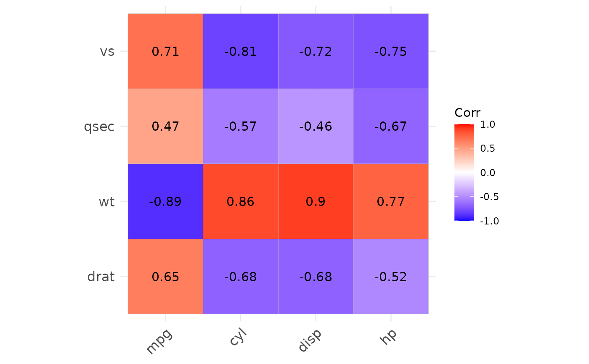
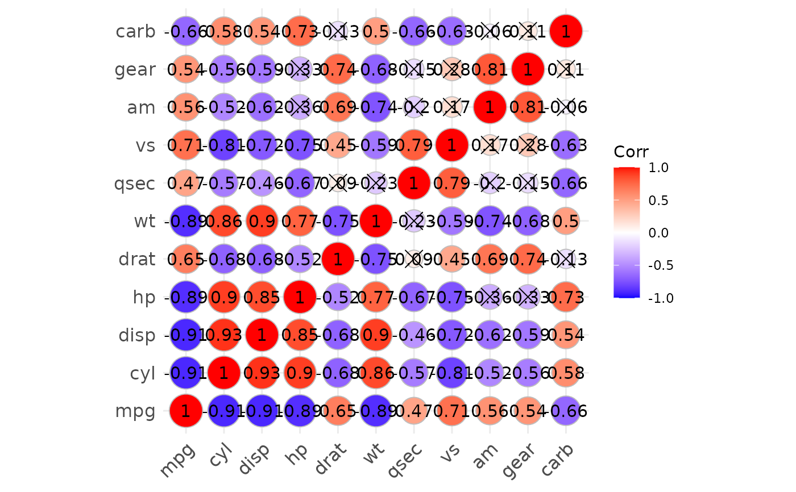
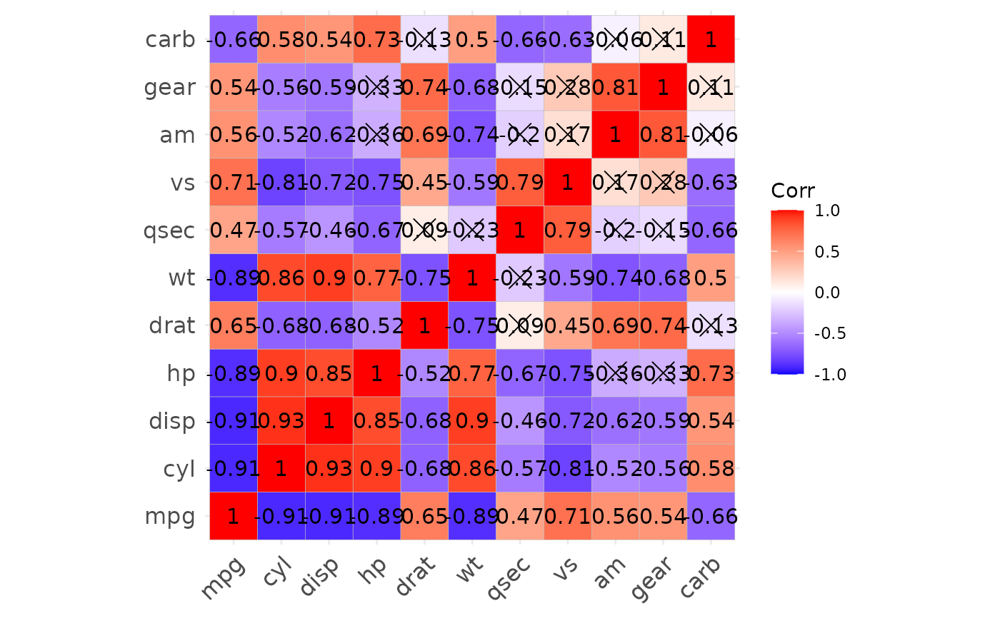

All variables must be continuous.
The matrix will be returned as an element of ggplot object.
This is basically a wrapper of R package
ggcorrplot.
show_cor(
data,
x_vars = colnames(data),
y_vars = x_vars,
cor_method = "spearman",
vis_method = "square",
lab = TRUE,
test = TRUE,
hc_order = FALSE,
p_adj = NULL,
...
)a data.frame.
variables/column names shown in x axis.
variables/column names shown in y axis.
method for correlation, default is 'spearman'.
visualization method, default is 'square', can also be 'circle'.
logical value. If TRUE, add correlation coefficient on the plot.
if TRUE, run test for correlation and mark significance.
logical value. If TRUE,
correlation matrix will be hc.ordered using hclust function.
p adjust method, see stats::p.adjust for details.
other parameters passing to ggcorrplot::ggcorrplot().
a ggplot object
show_sig_feature_corrplot for specific and more powerful association analysis and visualization.
data("mtcars")
p1 <- show_cor(mtcars)
p2 <- show_cor(mtcars,
x_vars = colnames(mtcars)[1:4],
y_vars = colnames(mtcars)[5:8]
)
p3 <- show_cor(mtcars, vis_method = "circle", p_adj = "fdr")
p1
p1$cor
#> $cor_mat
#> mpg cyl disp hp drat wt qsec vs am gear carb
#> mpg 1.00 -0.91 -0.91 -0.89 0.65 -0.89 0.47 0.71 0.56 0.54 -0.66
#> cyl -0.91 1.00 0.93 0.90 -0.68 0.86 -0.57 -0.81 -0.52 -0.56 0.58
#> disp -0.91 0.93 1.00 0.85 -0.68 0.90 -0.46 -0.72 -0.62 -0.59 0.54
#> hp -0.89 0.90 0.85 1.00 -0.52 0.77 -0.67 -0.75 -0.36 -0.33 0.73
#> drat 0.65 -0.68 -0.68 -0.52 1.00 -0.75 0.09 0.45 0.69 0.74 -0.13
#> wt -0.89 0.86 0.90 0.77 -0.75 1.00 -0.23 -0.59 -0.74 -0.68 0.50
#> qsec 0.47 -0.57 -0.46 -0.67 0.09 -0.23 1.00 0.79 -0.20 -0.15 -0.66
#> vs 0.71 -0.81 -0.72 -0.75 0.45 -0.59 0.79 1.00 0.17 0.28 -0.63
#> am 0.56 -0.52 -0.62 -0.36 0.69 -0.74 -0.20 0.17 1.00 0.81 -0.06
#> gear 0.54 -0.56 -0.59 -0.33 0.74 -0.68 -0.15 0.28 0.81 1.00 0.11
#> carb -0.66 0.58 0.54 0.73 -0.13 0.50 -0.66 -0.63 -0.06 0.11 1.00
#>
#> $p_mat
#> mpg cyl disp hp drat
#> mpg 0.000000e+00 6.112687e-10 9.380327e-10 1.787835e-07 1.776240e-05
#> cyl 6.112687e-10 0.000000e+00 1.802838e-12 3.477861e-09 8.244636e-06
#> disp 9.380327e-10 1.802838e-12 0.000000e+00 7.142679e-08 5.282022e-06
#> hp 1.787835e-07 3.477861e-09 7.142679e-08 0.000000e+00 9.988772e-03
#> drat 1.776240e-05 8.244636e-06 5.282022e-06 9.988772e-03 0.000000e+00
#> wt 1.293959e-10 1.217567e-07 1.222320e-11 4.145827e-05 4.784260e-06
#> qsec 1.708199e-02 3.660533e-04 1.314404e-02 5.766253e-06 6.195826e-01
#> vs 3.415937e-05 1.843018e-08 5.235012e-06 2.940896e-06 1.167553e-02
#> am 2.850207e-04 2.151207e-03 3.662114e-04 1.798309e-01 4.726790e-06
#> gear 5.400948e-03 4.173297e-03 9.635921e-04 4.930119e-01 8.360110e-06
#> carb 1.084446e-03 1.942340e-03 2.526789e-02 7.827810e-07 6.211834e-01
#> wt qsec vs am gear
#> mpg 1.293959e-10 1.708199e-02 3.415937e-05 2.850207e-04 5.400948e-03
#> cyl 1.217567e-07 3.660533e-04 1.843018e-08 2.151207e-03 4.173297e-03
#> disp 1.222320e-11 1.314404e-02 5.235012e-06 3.662114e-04 9.635921e-04
#> hp 4.145827e-05 5.766253e-06 2.940896e-06 1.798309e-01 4.930119e-01
#> drat 4.784260e-06 6.195826e-01 1.167553e-02 4.726790e-06 8.360110e-06
#> wt 0.000000e+00 3.388683e-01 9.798492e-04 1.125440e-05 4.586601e-04
#> qsec 3.388683e-01 0.000000e+00 1.029669e-06 2.056621e-01 2.425344e-01
#> vs 9.798492e-04 1.029669e-06 0.000000e+00 3.570439e-01 2.579439e-01
#> am 1.125440e-05 2.056621e-01 3.570439e-01 0.000000e+00 5.834043e-08
#> gear 4.586601e-04 2.425344e-01 2.579439e-01 5.834043e-08 0.000000e+00
#> carb 1.463861e-02 4.536949e-05 6.670496e-04 7.544526e-01 1.290291e-01
#> carb
#> mpg 1.084446e-03
#> cyl 1.942340e-03
#> disp 2.526789e-02
#> hp 7.827810e-07
#> drat 6.211834e-01
#> wt 1.463861e-02
#> qsec 4.536949e-05
#> vs 6.670496e-04
#> am 7.544526e-01
#> gear 1.290291e-01
#> carb 0.000000e+00
#>
p2

p3

## Auto detect problem variables
mtcars$xx <- 0L
p4 <- show_cor(mtcars)
#> Problem variables with sd=0 detected: xx
#> They will be removed.
p4
